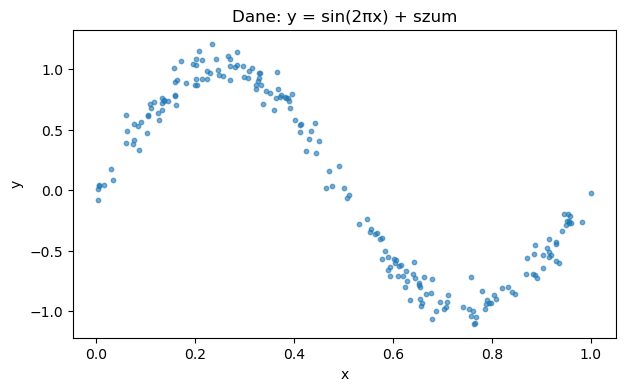
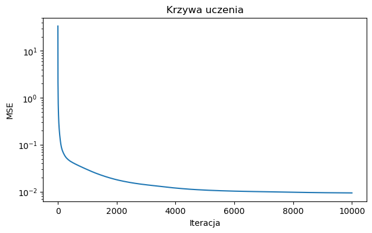
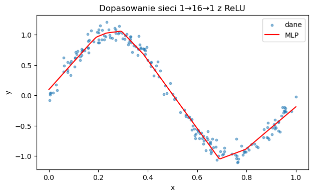
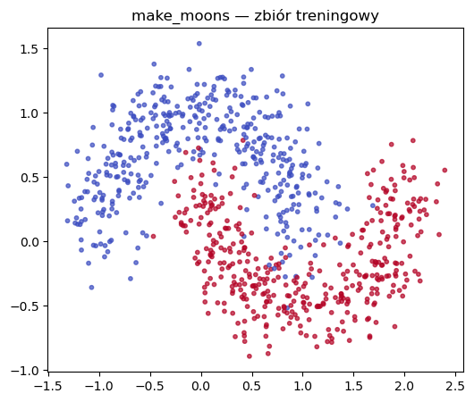
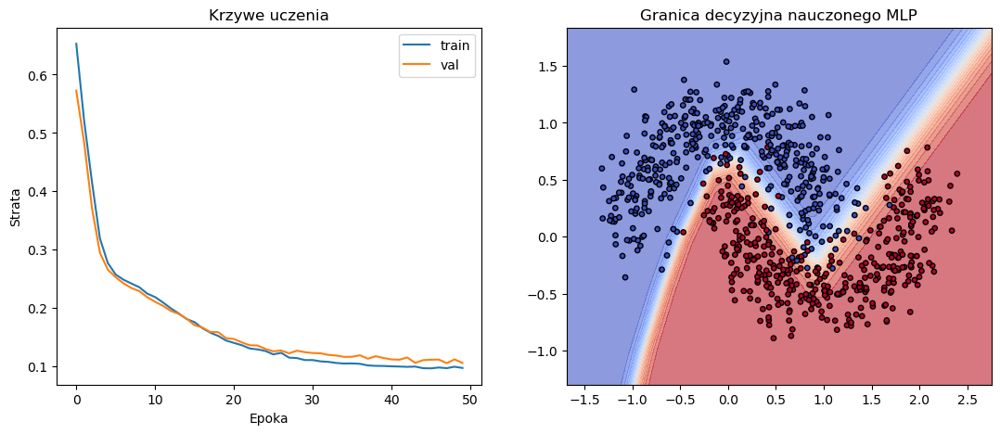

import torch
w = torch.tensor([1.5], requires_grad=True)
b = torch.tensor([-1.0], requires_grad=True)
x = torch.tensor([2.0]) # bez requires_grad — to dane, nie parametr
y = torch.tensor([1.0])Wykład 5: Różniczkowanie automatyczne i wsteczna propagacja
Biblioteki Python w analizie danych
Motywacja: dlaczego ręczne liczenie gradientu nas zawodzi
Na wykładzie 4 oraz w lab 8 wyprowadzaliśmy gradient funkcji straty ręcznie. Dla regresji liniowej z MSE i regresji logistycznej z BCE wzór miał ładną, wspólną postać:
\[\begin{equation*} \nabla_{\mathbf{w}} L = \frac{1}{N} X^T (\hat{\mathbf{y}} - \mathbf{y}). \end{equation*}\]
Wystarczyło jedno zastosowanie reguły łańcuchowej, krótkie wyprowadzenie i jedna linijka kodu w pętli treningowej.
Załóżmy teraz, że chcemy wytrenować trochę bogatszy model — sieć z jedną warstwą ukrytą:
\[\begin{equation*} \hat{y} = \sigma\!\left(\text{ReLU}(\mathbf{x}^T W_1 + \mathbf{b}_1)\, W_2 + b_2\right). \end{equation*}\]
Aby zastosować mini-batch gradient descent, potrzebujemy gradientów funkcji straty względem każdego z parametrów \(W_1\), \(\mathbf{b}_1\), \(W_2\), \(b_2\). Wyprowadzenie \(\partial L / \partial W_1\) wymaga kilkukrotnego zastosowania reguły łańcuchowej, sumy iloczynów Hadamarda z pochodnymi funkcji aktywacji i ostrożnego pilnowania kształtów tensorów. Dla sieci konwolucyjnych z wykładu 6 — z kilkunastoma warstwami i nieliniowościami — ręczne wyprowadzanie jest praktycznie niewykonalne.
Potrzebujemy mechanizmu, który zrobi to za nas: weźmie dowolny model zapisany jako sekwencję operacji tensorowych i automatycznie obliczy gradient straty względem wszystkich parametrów. Takim mechanizmem jest różniczkowanie automatyczne (automatic differentiation, autograd) wbudowane w PyTorch. Zanim opiszemy, jak się go używa, spójrzmy na ideę, która stoi za nim.
Graf obliczeniowy
Każdą sekwencję operacji tensorowych można przedstawić jako skierowany graf acykliczny:
- Liście to tensory wejściowe i parametry modelu.
- Węzły wewnętrzne to wyniki operacji elementarnych (mnożenie, dodawanie, funkcje aktywacji itp.) zastosowanych do swoich rodziców.
- Korzeń to skalarna funkcja straty \(L\).
Rozważmy bardzo prosty przykład: pojedynczy neuron z sigmoidą i stratą kwadratową dla jednej próbki:
\[\begin{equation*} z = xw + b, \qquad \hat{y} = \sigma(z), \qquad L = (y - \hat{y})^2. \end{equation*}\]
Graf obliczeniowy wygląda tak:
x w b y
\ / | |
\ / | |
\ / | |
[* ] | |
\ | |
\ / |
\ / |
[+ ] |
\ |
[σ] |
\ /
\ /
[- ]
|
[^2]
|
LPierwsze przejście — od liści do korzenia — to forward pass: liczymy wartości węzeł po węźle, zapamiętując wyniki pośrednie. Tak właśnie działała każda nasza pętla treningowa do tej pory.
Po forward passie znamy wartość \(L\). Pytanie: jak obliczyć gradienty \(\partial L / \partial w\) i \(\partial L / \partial b\)?
Reguła łańcuchowa i wsteczna propagacja
Dla naszego mini-przykładu można po prostu zwinąć całą funkcję w jeden wzór i policzyć pochodne. Jeśli jednak graf ma kilkadziesiąt węzłów, takie podejście jest nieefektywne, bo wielokrotnie liczy te same pochodne cząstkowe.
Aby zapis był zwięzły, wprowadźmy notację: dla każdego węzła \(v\) w grafie obliczeniowym definiujemy
\[\begin{equation*} \bar{v} := \frac{\partial L}{\partial v}. \end{equation*}\]
Wielkość \(\bar{v}\) czytamy jako „gradient straty \(L\) względem węzła \(v\)” — to właśnie to, co chcemy obliczyć dla każdego liścia będącego parametrem modelu. Dla samego korzenia mamy trywialnie \(\bar{L} = \partial L / \partial L = 1\).
Reguła łańcuchowa w wieloparametrowej postaci mówi, że jeśli węzeł \(v\) wpływa na \(L\) poprzez wszystkie swoje dzieci \(u_1, \ldots, u_k\) (czyli węzły obliczone bezpośrednio z użyciem \(v\)), to:
\[\begin{equation*} \bar{v} = \sum_{i=1}^{k} \bar{u_i} \cdot \frac{\partial u_i}{\partial v}. \end{equation*}\]
To kluczowa obserwacja: gradient \(\bar{v}\) wyraża się przez gradienty \(\bar{u_i}\) jego dzieci pomnożone przez lokalne pochodne \(\partial u_i / \partial v\), czyli pochodne pojedynczych operacji wykonanych w grafie. Skoro tak, to gradienty wszystkich węzłów można policzyć w jednym przejściu po grafie — od korzenia w stronę liści — pod warunkiem, że gdy dochodzimy do węzła \(v\), jego dzieci zostały już przetworzone i znamy ich gradienty.
Ten wzorzec — przebieg po grafie od końca do początku — to algorytm wstecznej propagacji (backpropagation).
Algorytm wstecznej propagacji:
- Wykonaj forward pass: oblicz i zapamiętaj wartości wszystkich węzłów.
- Zainicjalizuj gradienty: \(\bar{L} \gets 1\) oraz \(\bar{v} \gets 0\) dla wszystkich pozostałych węzłów.
- Przechodź po węzłach \(v\) w kolejności odwrotnej topologicznej (od korzenia do liści). Gdy odwiedzasz \(v\), jego gradient \(\bar{v}\) jest już w pełni policzony — wszystkie dzieci \(v\) wpisały już swoje wkłady. Teraz \(v\) rozdziela ten gradient do swoich rodziców: dla każdego rodzica \(p\) (węzła, z którego \(v\) został obliczony) wykonaj aktualizację
\[\begin{equation*} \bar{p} \mathrel{+}= \bar{v} \cdot \frac{\partial v}{\partial p}. \end{equation*}\]
- Zwróć gradienty \(\bar{w}\) zgromadzone w liściach grafu odpowiadających parametrom modelu.
Dwie obserwacje:
Każda krawędź grafu przetwarzana jest dokładnie raz. Krawędź \(p \to v\) generuje w punkcie 3 jeden wkład \(\bar{v} \cdot \partial v / \partial p\) do gradientu \(\bar{p}\). Gradient każdego węzła jest akumulowany z wkładów pochodzących od wszystkich operacji, które tego węzła użyły. Złożoność czasowa algorytmu jest więc tego samego rzędu co forward pass.
Algorytm jest mechaniczny i niezależny od konkretnego modelu. Ważne jest tylko to, by każda operacja używana w forward passie miała zaimplementowaną swoją lokalną pochodną \(\partial v / \partial p\). Reszta to systematyczne stosowanie reguły łańcuchowej w odpowiedniej kolejności.
Mały przykład
Prześledźmy backprop krok po kroku na grafie z poprzedniej sekcji. Cel jest trojaki:
- zobaczyć, że cały algorytm to mechaniczne podstawianie lokalnych pochodnych do reguły łańcuchowej, bez żadnych globalnych wyprowadzeń;
- zauważyć, że backward pass wykorzystuje wartości zapamiętane w forward passie — np. pochodna sigmoidy ma postać \(\sigma'(z) = \sigma(z)(1-\sigma(z)) = \hat{y}(1-\hat{y})\), więc odwołuje się do \(\hat{y}\) obliczonego wcześniej;
- zobaczyć, że pośredni gradient \(\bar{z}\) liczony jest raz, a następnie używany wielokrotnie — tu w aktualizacjach gradientów wszystkich trzech rodziców węzła \(z\).
Forward pass sprowadza się do trzech zapamiętanych wyrażeń:
\[\begin{equation*} z = xw + b, \qquad \hat{y} = \sigma(z), \qquad L = (y - \hat{y})^2. \end{equation*}\]
Backward pass (zaczynamy od \(\bar{L} = 1\) i schodzimy po grafie):
Węzeł \(L = (y - \hat{y})^2\). Lokalna pochodna \(\partial L / \partial \hat{y} = -2(y - \hat{y})\). Stąd
\[\begin{equation*} \bar{\hat{y}} = \bar{L} \cdot \frac{\partial L}{\partial \hat{y}} = -2(y - \hat{y}). \end{equation*}\]
Węzeł \(\hat{y} = \sigma(z)\). Lokalna pochodna \(\partial \hat{y} / \partial z = \hat{y}(1-\hat{y})\) — odwołuje się wprost do wartości \(\hat{y}\) zapamiętanej w forward passie. Stąd
\[\begin{equation*} \bar{z} = \bar{\hat{y}} \cdot \hat{y}(1-\hat{y}). \end{equation*}\]
Węzeł \(z = xw + b\) ma trzech rodziców: \(x\), \(w\), \(b\). Lokalne pochodne to \(\partial z / \partial x = w\), \(\partial z / \partial w = x\), \(\partial z / \partial b = 1\). Z tej samej wartości \(\bar{z}\) wyciągamy trzy wkłady:
- \(\bar{w} \mathrel{+}= \bar{z} \cdot x\),
- \(\bar{b} \mathrel{+}= \bar{z}\),
- \(\bar{x} \mathrel{+}= \bar{z} \cdot w\) (dla danych nieużywany, ale taki wkład powstaje).
Trzy rzeczy są godne uwagi. Po pierwsze, w żadnym momencie nie wyprowadzaliśmy wzoru na \(\partial L / \partial w\) jako takiego — gdybyśmy chcieli, moglibyśmy teraz zwinąć wszystkie kroki w jeden łańcuch:
\[\begin{equation*} \bar{w} = -2(y - \hat{y}) \cdot \hat{y}(1-\hat{y}) \cdot x, \end{equation*}\]
ale algorytm wstecznej propagacji nigdy tego wzoru jawnie nie utworzył — wstawiał tylko lokalne pochodne pojedynczych operacji i mnożył. Dla sieci z dziesiątkami warstw taka jawna kompozycja byłaby niewykonalna, a backprop poradzi sobie z nią bez różnicy. Po drugie, backward pass jawnie korzysta z zapamiętanej wartości \(\hat{y}\); pamięć potrzebna na trening sieci jest proporcjonalna do liczby aktywacji w forward passie, nie tylko do liczby parametrów. Po trzecie, gradient \(\bar{z}\) został policzony raz i posłużył do trzech aktualizacji — po jednej dla każdego rodzica \(z\). Ten reuse jest źródłem efektywności backprop: każdy gradient pośredni liczony jest raz, niezależnie od tego, ile liści grafu na końcu od niego zależy.
Te trzy własności — mechaniczność, użycie zapamiętanych wartości forward passu i wielokrotne użycie gradientów pośrednich — są jądrem każdej implementacji autograd, w tym tej w PyTorchu, którą poznamy w następnej sekcji.
Autograd w PyTorch
Mechanizm wstecznej propagacji opisany powyżej jest tak ogólny, że nie wymaga, byśmy go sami implementowali — wystarczy, żeby biblioteka tensorowa robiła trzy rzeczy:
- zapamiętywała w trakcie forward passu, jakie operacje wykonano i na jakich tensorach,
- dla każdej operacji znała wzór na lokalną pochodną,
- udostępniała funkcję, która wywoła backward pass.
PyTorch robi dokładnie to. Mechanizm nazywa się autograd.
Tensory śledzone przez autograd
Aby PyTorch zaczął śledzić operacje na tensorze, ustawiamy mu flagę requires_grad=True:
Teraz każda operacja, w której wystąpi w lub b, doklei nowy węzeł do grafu obliczeniowego budowanego dynamicznie:
z = x * w + b
y_hat = torch.sigmoid(z)
loss = (y - y_hat) ** 2
print(z)
print(y_hat)
print(loss)tensor([2.], grad_fn=<AddBackward0>)
tensor([0.8808], grad_fn=<SigmoidBackward0>)
tensor([0.0142], grad_fn=<PowBackward0>)Każdy z tych tensorów wie, jaką operacją został utworzony — atrybut grad_fn wskazuje na funkcję wstecznego przejścia dla swojej operacji:
print(z.grad_fn)
print(y_hat.grad_fn)
print(loss.grad_fn)<AddBackward0 object at 0x7f4c0eb1fb20>
<SigmoidBackward0 object at 0x7f4c0eb1fb20>
<PowBackward0 object at 0x7f4c0eb1fb20>x i y nie mają grad_fn, bo nie były tworzone przez żadną śledzoną operację — są liśćmi grafu, ale liśćmi „zewnętrznymi”, nie parametrami.
backward() i atrybut .grad
Aby uruchomić wsteczną propagację, wywołujemy loss.backward(). PyTorch przechodzi po grafie od korzenia (wartości skalarnej loss) do liści z requires_grad=True i wypełnia ich atrybut .grad:
loss.backward()
print(f"w.grad = {w.grad.item():.4f}")
print(f"b.grad = {b.grad.item():.4f}")w.grad = -0.0501
b.grad = -0.0250Otrzymane wartości zgadzają się z naszym ręcznym wyliczeniem z poprzedniej sekcji (\(\bar{w} \approx -0.0500\), \(\bar{b} \approx -0.0250\)) — tylko że nie musieliśmy nic wyprowadzać. Cała magia kryje się w loss.backward().
Ważne ograniczenia i konwencje
backward() można wywołać tylko na skalarze. Jeśli chcielibyśmy zróżniczkować coś, co nie jest skalarem (np. wektor strat dla wielu próbek), musielibyśmy podać wektor wag — ale w praktyce zawsze redukujemy do skalara przez .mean() lub .sum().
Gradienty się akumulują. Każde kolejne wywołanie .backward() dodaje nowe wartości do .grad, zamiast je zastępować. To celowe — dzięki temu można sumować gradienty z kilku batchy przed aktualizacją, ale w typowej pętli treningowej trzeba pamiętać, żeby przed kolejnym backward passem wyzerować gradienty:
w.grad.zero_()
b.grad.zero_()tensor([0.])Forward pass z requires_grad=True zużywa pamięć. PyTorch zapamiętuje wartości pośrednie potrzebne do backward passu. Dla treningu to konieczne, ale przy predykcji czy walidacji jest to marnotrawstwo.
torch.no_grad() i .detach()
Są dwa sposoby na wyłączenie śledzenia operacji.
torch.no_grad() to menedżer kontekstu, w którym nic nie jest śledzone, mimo że tensory wciąż mają requires_grad=True:
with torch.no_grad():
y_pred = torch.sigmoid(x * w + b)
print(f"y_pred ma grad_fn: {y_pred.grad_fn is not None}")y_pred ma grad_fn: FalseStosujemy go zawsze, gdy nie planujemy liczyć gradientu — w pętli walidacyjnej, przy predykcji na nowych danych, oraz przy ręcznej aktualizacji wag (do tego wrócimy w sekcji o sieci „od dołu”).
.detach() zwraca nowy tensor o tej samej zawartości, ale odcięty od grafu obliczeniowego:
y_hat_detached = y_hat.detach()
print(f"y_hat_detached.grad_fn: {y_hat_detached.grad_fn}")y_hat_detached.grad_fn: NoneUżywamy go, gdy chcemy zatrzymać propagację gradientu w konkretnym miejscu grafu — np. konwertując tensor PyTorch do tablicy NumPy do wizualizacji, gdzie graf nie jest już potrzebny.
Kontrolny eksperyment: ręczny gradient vs autograd
Zweryfikujmy, że dla regresji liniowej z lab 8 autograd daje dokładnie ten sam gradient co nasz ręczny wzór \(\nabla_{\mathbf{w}} L = -\frac{2}{N} X^T (\mathbf{y} - X\mathbf{w})\).
torch.manual_seed(0)
N, d = 50, 3
X = torch.randn(N, d + 1)
y = torch.randn(N)
w = torch.randn(d + 1, requires_grad=True)
# Ręczny wzór
y_pred = X @ w
residuals = y - y_pred
grad_manual = -2.0 / N * (X.T @ residuals)
# Autograd
loss = ((y - X @ w) ** 2).mean()
loss.backward()
grad_auto = w.grad
print(f"Maksymalna różnica: {(grad_manual.detach() - grad_auto).abs().max().item():.2e}")Maksymalna różnica: 9.54e-07Zgadza się co do precyzji numerycznej. Tym samym mamy potwierdzenie, że jeśli kiedyś byliśmy w stanie wyprowadzić gradient ręcznie, to autograd da nam dokładnie ten sam wynik — z tą różnicą, że w przypadku autograd nie musieliśmy nic wyprowadzać.
Sieć dwuwarstwowa zbudowana „od dołu”
Mając autograd, możemy wytrenować sieć z warstwą ukrytą bez wyprowadzania jakichkolwiek gradientów. Pokażmy to na prostym zadaniu regresji nieliniowej, w którym regresja liniowa byłaby bezradna.
Dane
Generujemy próbki z funkcji \(y = \sin(2\pi x) + \varepsilon\) na \(x \in [0, 1]\):
import torch
import matplotlib.pyplot as plt
torch.manual_seed(42)
N = 200
x = torch.rand(N, 1) # kształt (N, 1)
y = torch.sin(2 * torch.pi * x) + 0.1 * torch.randn(N, 1)
fig, ax = plt.subplots(figsize=(7, 4))
ax.scatter(x.numpy(), y.numpy(), s=10, alpha=0.6)
ax.set_xlabel("x"); ax.set_ylabel("y")
ax.set_title("Dane: y = sin(2πx) + szum");
Model
Sieć ma jedną warstwę ukrytą o szerokości \(H = 16\) z aktywacją ReLU i liniową warstwą wyjściową:
\[\begin{equation*} \hat{y} = \text{ReLU}(x W_1 + \mathbf{b}_1)\, W_2 + b_2, \end{equation*}\]
gdzie \(W_1 \in \mathbb{R}^{1 \times H}\), \(\mathbf{b}_1 \in \mathbb{R}^H\), \(W_2 \in \mathbb{R}^{H \times 1}\), \(b_2 \in \mathbb{R}\).
Parametry inicjalizujemy małymi wartościami losowymi i oznaczamy requires_grad=True:
H = 64
W1 = torch.randn(1, H, requires_grad=True)
b1 = torch.zeros(H, requires_grad=True)
W2 = torch.randn(H, 1, requires_grad=True)
b2 = torch.zeros(1, requires_grad=True)Forward pass piszemy jako sekwencję operacji tensorowych:
def forward(x):
h = torch.relu(x @ W1 + b1) # warstwa ukryta, kształt (N, H)
return h @ W2 + b2 # wyjście, kształt (N, 1)Pętla treningowa
Trening wykonujemy w trybie batch GD (wszystkie 200 próbek na raz — zbiór jest mały). Strata to MSE. Każda iteracja składa się z czterech kroków: forward, backward, aktualizacja wag w torch.no_grad(), wyzerowanie gradientów.
lr = 0.01
num_iter = 10_000
history = []
for it in range(num_iter):
# Forward
y_pred = forward(x)
loss = ((y - y_pred) ** 2).mean()
# Backward — autograd liczy gradienty wszystkich parametrów
loss.backward()
# Aktualizacja wag — w no_grad, żeby nie dokleić tego do grafu
with torch.no_grad():
for p in (W1, b1, W2, b2):
p -= lr * p.grad
p.grad.zero_() # czyszczenie gradientu na następną iterację
history.append(loss.item())
print(f"MSE końcowe: {history[-1]:.4f}")MSE końcowe: 0.0094Trzy szczegóły implementacyjne warto skomentować.
Aktualizacja w torch.no_grad(). Operacja p -= lr * p.grad modyfikuje tensor p, który ma requires_grad=True. Bez no_grad() PyTorch dokleiłby tę operację do grafu obliczeniowego, co spowodowałoby błąd przy następnym backward() (próba różniczkowania w miejscu zmienionym poza grafem).
p -= lr * p.grad zamiast p = p - lr * p.grad. Druga forma utworzyłaby nowy tensor (bez requires_grad) i przypisała go do nazwy p, ale nasza krotka (W1, b1, W2, b2) nadal wskazywałaby na stare tensory. Operacja in-place modyfikuje pamięć istniejącego tensora.
p.grad.zero_() po każdej iteracji. Bez tego gradienty zaczęłyby się akumulować z iteracji na iterację, co dawałoby coraz większe i coraz bardziej zaszumione kroki.
Wyniki
# Krzywa uczenia
fig, ax = plt.subplots(figsize=(7, 4))
ax.plot(history)
ax.set_xlabel("Iteracja"); ax.set_ylabel("MSE")
ax.set_yscale("log")
ax.set_title("Krzywa uczenia");
Aby zobaczyć dopasowanie modelu, predykcję wykonujemy w torch.no_grad():
x_grid = torch.linspace(0, 1, 200).reshape(-1, 1)
with torch.no_grad():
y_grid = forward(x_grid)
fig, ax = plt.subplots(figsize=(7, 4))
ax.scatter(x.numpy(), y.numpy(), s=10, alpha=0.5, label="dane")
ax.plot(x_grid.numpy(), y_grid.numpy(), color="red", label="MLP")
ax.set_xlabel("x"); ax.set_ylabel("y")
ax.legend(); ax.set_title("Dopasowanie sieci 1→16→1 z ReLU");
Sieć z 64 neuronami w warstwie ukrytej dobrze odtwarza sinusoidę — czego regresja liniowa nie potrafi zrobić w ogóle, a regresja z bazami Gaussa z lab 8 wymagała ręcznego wyprowadzenia bazy. Tutaj dostajemy uniwersalny aproksymator za darmo: wystarczyły cztery linijki forward passu i jedna linijka loss.backward().
To ważny moment. Mamy w rękach narzędzie wystarczające do wytrenowania dowolnej architektury wyrażalnej jako kompozycja operacji tensorowych. Ale kod robi się powtarzalny: ręczna inicjalizacja parametrów, ręczne pisanie forward passu jako sekwencji wyrażeń macierzowych, ręczne iterowanie po krotce parametrów. Następne sekcje pokazują, jak PyTorch te powtarzalności automatyzuje.
torch.nn — kolejny poziom abstrakcji
Moduł torch.nn wprowadza dwa pojęcia, które porządkują kod sieci neuronowych: warstwy (nn.Linear, nn.Conv2d, …) i moduły (nn.Module).
nn.Linear
Warstwa \(y = xW + b\) dostępna jest jako gotowa klasa:
import torch.nn as nn
linear = nn.Linear(in_features=1, out_features=16)
print(linear.weight.shape) # (16, 1) — uwaga: PyTorch trzyma W transponowane!
print(linear.bias.shape) # (16,)torch.Size([16, 1])
torch.Size([16])Wagi i bias są od razu zarejestrowane jako parametry z requires_grad=True i zainicjalizowane sensownie (domyślnie wariantem inicjalizacji Kaiminga). Wywołanie linear(x) wykonuje mnożenie macierzowe i dodanie biasu.
Funkcje aktywacji
Najpopularniejsze aktywacje są dostępne w dwóch wariantach.
Jako klasy (warstwy bez parametrów) — używamy ich, gdy budujemy model przez nn.Sequential lub nn.Module:
nn.ReLU(), nn.Sigmoid(), nn.Tanh(), nn.Softmax(dim=...)Jako funkcje w torch.nn.functional (zwyczajowo importowane jako F):
import torch.nn.functional as F
F.relu(x), F.sigmoid(x), F.softmax(x, dim=...)Oba warianty dają identyczne wyniki. Wybór jest stylistyczny: klasy są wygodniejsze przy nn.Sequential, funkcje czytelniejsze, gdy forward pass jest pisany ręcznie.
nn.Module — klasa bazowa
nn.Module to klasa bazowa wszystkich modeli PyTorch. Dziedziczenie po niej daje dwie ważne korzyści:
- wszystkie atrybuty będące instancjami
nn.Module(warstwy) lubnn.Parametersą automatycznie rejestrowane jako część modelu —model.parameters()zwraca iterator po wszystkich parametrach, gotowy do podania optymalizatorowi; - metody pomocnicze jak
model.to(device),model.train(),model.eval()rekurencyjnie obejmują wszystkie podmoduły.
Standardowy szkielet modelu wygląda tak:
class MyModel(nn.Module):
def __init__(self, in_features, hidden, out_features):
super().__init__()
self.fc1 = nn.Linear(in_features, hidden)
self.fc2 = nn.Linear(hidden, out_features)
def forward(self, x):
h = F.relu(self.fc1(x))
return self.fc2(h)Konwencja: konstruktor tworzy warstwy, metoda forward definiuje, jak dane przechodzą przez sieć. Wywołanie model(x) (bez model.forward(x)) wykonuje forward, ale dodatkowo uruchamia hooki PyTorch — to zalecana forma.
nn.Sequential — gdy sieć to po prostu ciąg warstw
Gdy forward pass jest prostą sekwencją warstw, można pominąć pisanie własnej klasy:
model = nn.Sequential(
nn.Linear(1, 16),
nn.ReLU(),
nn.Linear(16, 1),
)nn.Sequential jest podklasą nn.Module, więc działa wszystko, co opisaliśmy wyżej (model(x), model.parameters(), model.to(device)).
Porównanie z naszą siecią „od dołu”
Sieć z poprzedniej sekcji w stylu nn.Module:
class MLP(nn.Module):
def __init__(self, hidden=16):
super().__init__()
self.fc1 = nn.Linear(1, hidden)
self.fc2 = nn.Linear(hidden, 1)
def forward(self, x):
return self.fc2(F.relu(self.fc1(x)))Cztery linijki zamiast ośmiu, parametry zarejestrowane same, inicjalizacja zrobiona sensownie. To samo, ale czytelniej.
Funkcje straty w PyTorch
Najczęściej używane straty są w torch.nn jako klasy. Tworzymy z nich instancję raz i używamy w pętli treningowej jak funkcji.
nn.MSELoss — błąd średniokwadratowy dla regresji:
criterion = nn.MSELoss()
loss = criterion(y_pred, y_true)nn.BCELoss — binary cross-entropy dla klasyfikacji binarnej. Oczekuje, że y_pred to prawdopodobieństwa w przedziale \([0, 1]\), więc model musi kończyć się sigmoidą.
nn.BCEWithLogitsLoss — wersja preferowana w praktyce. Przyjmuje logity (wyjścia sieci przed sigmoidą) i sama łączy sigmoidę z log-em w sposób stabilny numerycznie. W sieci z taką stratą ostatnia warstwa to nn.Linear bez aktywacji.
nn.CrossEntropyLoss — strata dla klasyfikacji wieloklasowej. Również przyjmuje logity, nie prawdopodobieństwa — łączy log-softmax z negative log-likelihood w jednej operacji. Etykiety podajemy jako tensor liczb całkowitych z indeksami klas (torch.long), nie jako one-hot.
criterion = nn.CrossEntropyLoss()
logits = model(x) # kształt (N, num_classes)
loss = criterion(logits, y) # y: kształt (N,), dtype torch.longCzęsty błąd początkujących to zakończenie modelu warstwą nn.Softmax przy używaniu CrossEntropyLoss — softmax wykonuje się wtedy dwa razy. Reguła do zapamiętania: jeśli używasz CrossEntropyLoss lub BCEWithLogitsLoss, ostatnią warstwą sieci jest nn.Linear. Jeśli potrzebujesz prawdopodobieństw (np. do raportowania), wywołaj softmax/sigmoid na logitach po policzeniu straty.
Optymalizatory
Aktualizację wag sieci abstrahuje moduł torch.optim. Wszystkie optymalizatory mają ten sam interfejs:
- konstruktor przyjmuje iterator po parametrach (
model.parameters()) i hiperparametry (learning rate, …), - metoda
step()wykonuje jeden krok aktualizacji na podstawie zgromadzonych w.gradgradientów, - metoda
zero_grad()zeruje gradienty wszystkich obsługiwanych parametrów.
optim.SGD to dokładnie to, co implementowaliśmy ręcznie:
optimizer = torch.optim.SGD(model.parameters(), lr=0.01)
optimizer.step() # p -= lr * p.grad dla każdego parametru
optimizer.zero_grad() # p.grad.zero_() dla każdego parametruoptim.Adam to optymalizator adaptacyjny — utrzymuje średnie ruchome gradientu (kierunek) i jego kwadratu (skala) i używa ich do automatycznego dostrajania efektywnego learning rate’u per parametr. Intuicyjnie: parametry, których gradienty są stale duże i jednoznaczne co do kierunku, dostają większe kroki; parametry, których gradienty są zaszumione i często zmieniają znak, dostają mniejsze. W praktyce Adam jest dobrym domyślnym wyborem — zbiega szybko bez delikatnego strojenia learning rate’u, którego SGD często wymaga.
optimizer = torch.optim.Adam(model.parameters(), lr=1e-3)Wewnętrznie Adam jest bardziej skomplikowany (utrzymuje dwa tensory stanu na każdy parametr), ale z punktu widzenia kodu wygląda identycznie jak SGD — i tak będzie dla każdego optymalizatora w torch.optim.
Pełna pętla treningowa
Mamy teraz wszystkie elementy układanki: model (nn.Module), kryterium (nn.MSELoss, nn.CrossEntropyLoss, …), optymalizator (optim.SGD, optim.Adam, …) i dane (DataLoader z wykładu 4). Kanoniczna pętla treningowa wygląda tak:
for epoch in range(num_epochs):
model.train()
for X_batch, y_batch in train_loader:
optimizer.zero_grad()
y_pred = model(X_batch)
loss = criterion(y_pred, y_batch)
loss.backward()
optimizer.step()
model.eval()
with torch.no_grad():
# ewaluacja na zbiorze walidacyjnym
...Pięć linii w pętli wewnętrznej zasługuje na komentarz, bo będzie to wzorzec używany w każdym następnym wykładzie.
optimizer.zero_grad() — zerowanie gradientów z poprzedniej iteracji. Bez tego akumulowałyby się.
y_pred = model(X_batch) — forward pass. Buduje graf obliczeniowy.
loss = criterion(y_pred, y_batch) — obliczenie skalarnej straty.
loss.backward() — backward pass. Wypełnia .grad w parametrach modelu.
optimizer.step() — aktualizacja parametrów na podstawie .grad.
Oprócz tego dwie sprawy organizacyjne.
model.train() vs model.eval() — tryb modelu wpływa na działanie niektórych warstw. nn.Dropout losowo zeruje aktywacje w trybie treningu, ale jest wyłączony w trybie ewaluacji. nn.BatchNorm używa statystyk batcha w trybie treningu, a zapamiętanych średnich w trybie ewaluacji. W naszym MLP żadna z tych warstw nie wystąpi, ale w sieciach z wykładu 6 — tak. Stosowanie model.train() i model.eval() od początku to dobry nawyk.
with torch.no_grad(): w pętli walidacyjnej — wyłącza budowę grafu, oszczędzając pamięć i czas. Walidacja nie wymaga gradientów.
Przykład: klasyfikacja make_moons
Zastosujmy ten szablon do zadania, którego regresja logistyczna nie umiałaby rozwiązać: klasyfikacji binarnej zbioru make_moons z sklearn.
import numpy as np
import matplotlib.pyplot as plt
import torch
import torch.nn as nn
import torch.nn.functional as F
from torch.utils.data import TensorDataset, DataLoader
from sklearn.datasets import make_moons
from sklearn.model_selection import train_test_split
torch.manual_seed(0)
np.random.seed(0)
X_np, y_np = make_moons(n_samples=1000, noise=0.2, random_state=0)
X_tr, X_va, y_tr, y_va = train_test_split(X_np, y_np, test_size=0.2, random_state=0)
X_tr = torch.tensor(X_tr, dtype=torch.float32)
y_tr = torch.tensor(y_tr, dtype=torch.long)
X_va = torch.tensor(X_va, dtype=torch.float32)
y_va = torch.tensor(y_va, dtype=torch.long)
fig, ax = plt.subplots(figsize=(6, 5))
ax.scatter(X_tr[:, 0], X_tr[:, 1], c=y_tr, cmap="coolwarm", s=10, alpha=0.7)
ax.set_title("make_moons — zbiór treningowy");
Etykiety zapisaliśmy jako torch.long, bo tego oczekuje CrossEntropyLoss.
Definiujemy model — MLP z jedną warstwą ukrytą o szerokości 16, dwoma logitami na wyjściu (po jednym na klasę):
class MoonsMLP(nn.Module):
def __init__(self, hidden=16):
super().__init__()
self.fc1 = nn.Linear(2, hidden)
self.fc2 = nn.Linear(hidden, 2)
def forward(self, x):
return self.fc2(F.relu(self.fc1(x)))
model = MoonsMLP()
criterion = nn.CrossEntropyLoss()
optimizer = torch.optim.Adam(model.parameters(), lr=1e-2)
train_loader = DataLoader(
TensorDataset(X_tr, y_tr), batch_size=64, shuffle=True
)Pętla treningowa:
num_epochs = 50
hist_train, hist_val = [], []
for epoch in range(num_epochs):
model.train()
epoch_loss = 0.0
for Xb, yb in train_loader:
optimizer.zero_grad()
logits = model(Xb)
loss = criterion(logits, yb)
loss.backward()
optimizer.step()
epoch_loss += loss.item() * len(Xb)
hist_train.append(epoch_loss / len(X_tr))
model.eval()
with torch.no_grad():
val_logits = model(X_va)
val_loss = criterion(val_logits, y_va).item()
val_acc = (val_logits.argmax(dim=1) == y_va).float().mean().item()
hist_val.append(val_loss)
print(f"Po {num_epochs} epokach: val_loss = {hist_val[-1]:.4f}, val_acc = {val_acc:.3f}")Po 50 epokach: val_loss = 0.1057, val_acc = 0.955Krzywe uczenia i granica decyzyjna:
fig, axes = plt.subplots(1, 2, figsize=(13, 5))
axes[0].plot(hist_train, label="train")
axes[0].plot(hist_val, label="val")
axes[0].set_xlabel("Epoka"); axes[0].set_ylabel("Strata")
axes[0].set_title("Krzywe uczenia"); axes[0].legend()
# Granica decyzyjna na siatce 2D
xx, yy = np.meshgrid(
np.linspace(X_np[:, 0].min() - 0.3, X_np[:, 0].max() + 0.3, 200),
np.linspace(X_np[:, 1].min() - 0.3, X_np[:, 1].max() + 0.3, 200),
)
grid = torch.tensor(np.c_[xx.ravel(), yy.ravel()], dtype=torch.float32)
model.eval()
with torch.no_grad():
probs = F.softmax(model(grid), dim=1)[:, 1].numpy().reshape(xx.shape)
axes[1].contourf(xx, yy, probs, levels=20, cmap="coolwarm", alpha=0.6)
axes[1].scatter(X_tr[:, 0], X_tr[:, 1], c=y_tr, cmap="coolwarm",
edgecolor="k", s=15)
axes[1].set_title("Granica decyzyjna nauczonego MLP");
MLP z jedną warstwą ukrytą i nieliniową aktywacją bez problemu uczy się nieliniowej granicy decyzyjnej w kształcie dwóch przeplatających się półksiężyców. Regresja logistyczna, ograniczona do hiperpłaszczyzny, nie miałaby na to szans.
Zwróćmy uwagę, jak różny jest ten kod od sieci „od dołu” z sekcji 5 pod względem ilości pisania, mimo że pod spodem dzieje się dokładnie to samo: forward, backward, krok optymalizatora.
Podsumowanie
Wykład 5 wprowadził mechanizm, który zwalnia nas z ręcznego wyprowadzania gradientów — i tym samym otwiera drogę do trenowania modeli o praktycznie dowolnej architekturze.
- Graf obliczeniowy — każda sekwencja operacji tensorowych ma postać DAG-u, którego liście to dane i parametry, a korzeń to skalar straty.
- Wsteczna propagacja — algorytm liczący wszystkie gradienty w jednym przejściu po grafie, od korzenia do liści, w czasie tego samego rzędu co forward pass.
- Autograd w PyTorch —
requires_grad=True, dynamiczne budowanie grafu,loss.backward()i atrybut.grad. Wyłączanie śledzenia:torch.no_grad(),.detach(). Akumulacja gradientów wymusza zerowanie po każdej iteracji. torch.nn—nn.Modulejako klasa bazowa,nn.Lineari inne warstwy, funkcje aktywacji jako klasy lub funkcje,nn.Sequentialdla prostych modeli.- Funkcje straty —
MSELoss,BCEWithLogitsLoss,CrossEntropyLoss. Dwie ostatnie przyjmują logity, a nie prawdopodobieństwa. - Optymalizatory —
optim.SGDjako odpowiednik tego, co liczyliśmy ręcznie;optim.Adamjako rozsądny domyślny wybór z adaptacyjnym lr per parametr. - Kanoniczna pętla treningowa —
zero_grad → forward → loss → backward → step, plusmodel.train()/model.eval()itorch.no_grad()w walidacji.
Wszystko to wystarczy do zbudowania i wytrenowania sieci w pełni połączonej (MLP) o dowolnej głębokości i szerokości. Co taki model ogarnia nie najgorzej: dane tabelaryczne, problemy regresji i klasyfikacji o umiarkowanej liczbie cech. Co ogarnia źle: obrazy. Liczba parametrów rośnie kwadratowo z rozdzielczością, a model nie ma żadnej wbudowanej wiedzy o lokalności i niezmienniczości translacyjnej. Jak to obejść — temat wykładu 6 o sieciach konwolucyjnych.